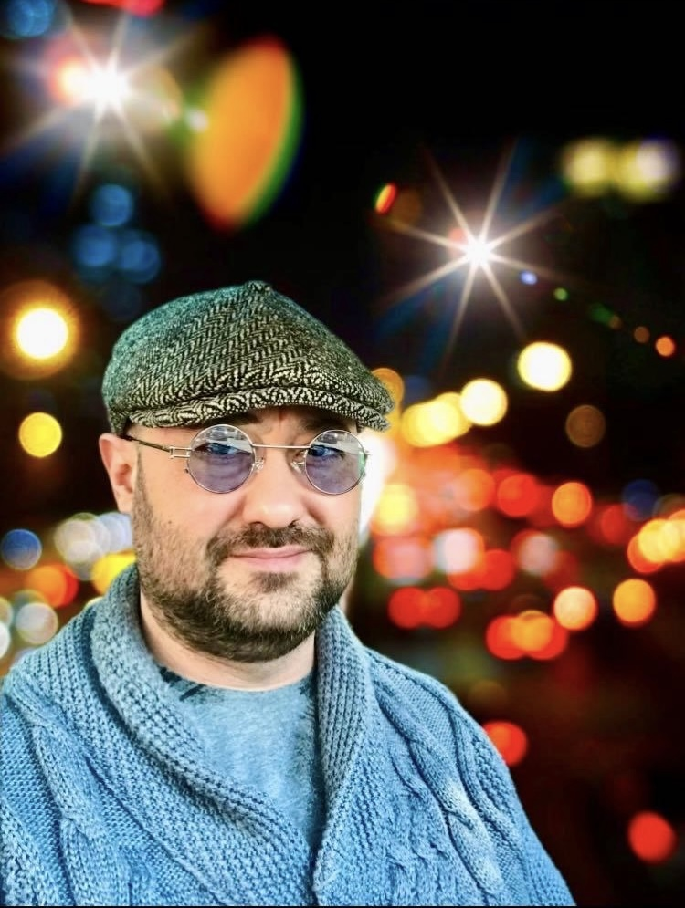

◁ DISCONNECT_SYS
LAB LUIS
Física Experimental, Electrónica Aplicada & Entornos Virtuales

[ X-RAY FACIAL SCANNER ]
SUBJECT: LUIS
BIOMETRIC NODE
ID: LAB-LUIS-001
OPTICAL ANALYSIS: ACTIVE
PHOTONIC SCAN: ONLINE
SCAN: 100%
SIGNAL: STABLE
◈ FACIAL IDENTIFICATION // X-RAY PHOTONIC ANALYSIS // LAB LUIS ◈
SOBRE MÍ // DATOS DE PERFIL PROFESIONAL
Soy Luis, investigador y desarrollador independiente especializado en electrónica, física y nuevas tecnologías. Mi trabajo se centra en la experimentación y el desarrollo de sistemas capaces de explorar nuevas formas de generación, transformación y aprovechamiento de la energía.
A lo largo de mi trayectoria he trabajado con electromagnetismo, inducción, energías alternativas, sensores, telemetría, ultrasonidos, láseres, mecánica de fluidos y sistemas de enfriamiento, combinando conocimientos de física y electrónica con plataformas de desarrollo como Arduino, ESP32, ESP32-S3 y Raspberry Pi Pico.
Una parte importante de mi trabajo consiste en diseñar y construir prototipos, estudiar fenómenos físicos y buscar configuraciones innovadoras que puedan convertirse en tecnologías funcionales. También desarrollo sistemas de medición, comunicación, automatización e inteligencia artificial integrada en dispositivos electrónicos.
Actualmente estoy orientando mis investigaciones hacia la interacción entre inteligencia artificial, electrónica y sistemas físicos, con el objetivo de crear dispositivos autónomos capaces de percibir, analizar y actuar sobre su entorno.
Mi meta es seguir desarrollando tecnologías experimentales propias, transformar las ideas en prototipos reales y explorar soluciones innovadoras en los campos de la energía, la electrónica, la inteligencia artificial y las nuevas tecnologías.
🌤️ TELEMETRÍA EN LÍNEA: WENDY METEO PACA (FRANCIA)
Adquiriendo vectores climáticos de la región PACA...
🌐 REGISTRO SÍSMICO Y TECTÓNICA DE MARSEILLE
Margen Tectónico
LIGURO-PROVENZAL // EUROASIA
Sistema de Fallas Regional
LA DURANCE / AIX-EN-PROVENCE
Micro-sismicidad Base
0.15 - 0.42 Mw [SUB-ACÚSTICO]
Acelerometría de Fondo
ESTABLE // PACA SOUTH-ALPS
📡 ESCÁNER TECTÓNICO SUBTERRÁNEO 3D [MARSEILLE SUBSURFACE]
DEPTH: 0 TO -15 KM // ROTAR: ARRASTRAR CURSOR
LASER SCANNER: ACTIVO // BARRIDO DE CORTEZA
🔬 CORES DE INVESTIGACIÓN ACTIVA
VACUUM CHAMBER:
10⁻⁶ TORR
ULTRASONIC FREQ:
42 kHz REG
LASER SPECTRUM:
LOCK OK
AUDIO LAB ENGINE:
OFFLINE
⏰ HORA REAL DEL LABORATORIO
00:00:00 ZULU